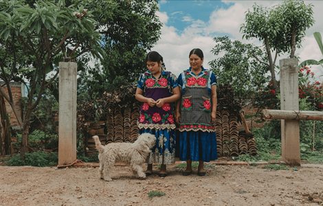
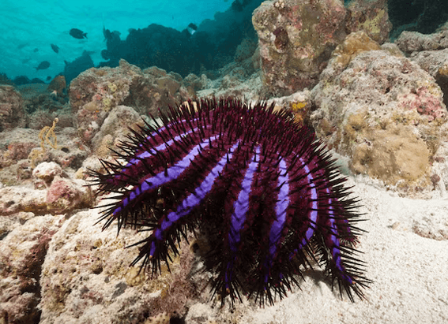
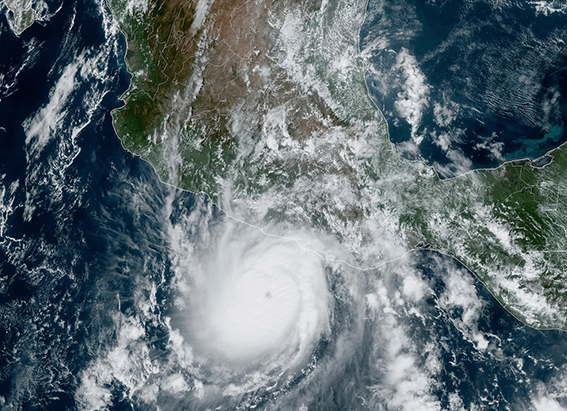

NATIONAL GEOGRAPHIC
What’s the real difference between a mutt and a designer dog
ANIMAL
- 
Though much attention is given to purebred and designer dogs, more than half of all dogs living in the United States are mixed breeds: the all-American mutt, celebrated on National Mutt Day on December 2.
No two are alike, making for unique companions. In addition to being lovable, mutts especially those with many different breeds in their background are usually healthier than purebreds thanks to diversity in their genes that leads to less risk for inherited diseases. Mixed-breed puppies come largely from unneutered dogs mating, and many end up needing new homes.
Of the nearly 3.3 million dogs that enter U.S. animal shelters every year, many are mutts. You can find all sorts of puppies and adult dogs available for adoption through animal shelters and rescue groups. Adoption not only helps save lives but also is less costly than buying a purebred puppy or designer breed.
How designer breeds came to be
Purebred dogs have been treasured for hundreds of years, with people fiercely devoted to their favorite breeds. But the 1990s saw a new fad so called designer dogs.It all began when Australian breeder Wally Conron was asked to supply a guide dog for a blind woman living in Hawaii. The woman’s husband was allergic to dogs. At the time, Conron worked for the Royal Guide Dogs Association of Australia (today called Guide Dogs Victoria).
After several failed attempts at training standard poodles as guide dogs, Conron decided to cross a standard poodle with a Labrador retriever. Three pups in the litter ended up being good candidates for guide dogs, but the husband with allergies could only tolerate one. That dog, named Sultan, was trained and sent off to Hawaii. But the organization had trouble pairing the other two dogs with blind handlers; people wanted purebred Labrador retrievers, not mixed breeds. Conron asked the group’s public relations department to notify the media and share that they had created a brand-new, “nonallergenic” guide dog called the Labradoodle. The gimmick worked and suddenly people were clamoring for this new guide dog breed.
When the general public heard of Labradoodles, people wanted them as pets. Other breeders began crossbreeding Labs and poodles, golden retrievers and poodles, and as the years went on, many other breeds with poodles, making up cutesy names and fueling the “doodle” craze.
Comments :
- john Very good
- john Very good
Leave a Reply
Your email address will not be published. Required fields are marked*
Related posts:
-
Hurricanes are escalating more quickly than ever. Here’s why.
On the morning of October 24, Tropical Storm Otis was heading for the Pacific coast of Mexico. Later that day, it was a major Cat-5 hurricane that would eventually slam Alcapulo with 165 mph winds.
View article -
Are these cities ready to become climate havens
For decades Perth, Sydney, and Melbourne have been lauded as some of the most livable places on the planet.
View article -
These creatures are otherworldly. They destroy coral. And they're hard to kill.
First, a diver stabs a needle at the end of a long pole into the center of the alien-like creature. Then, a vinegar solution is injected in several spots before the animal is gently pulled away from the coral where it was feeding
View article